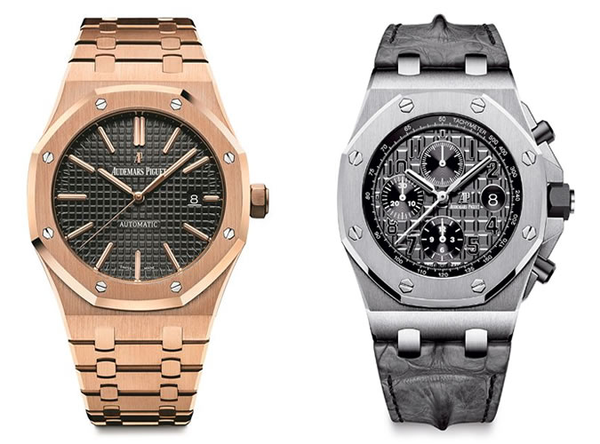
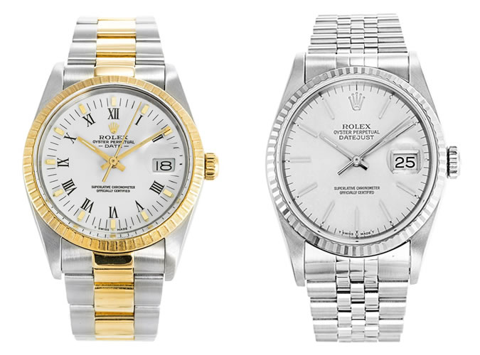
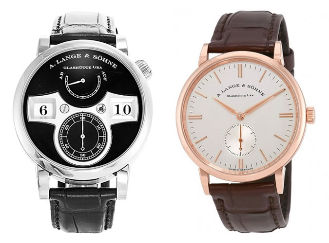
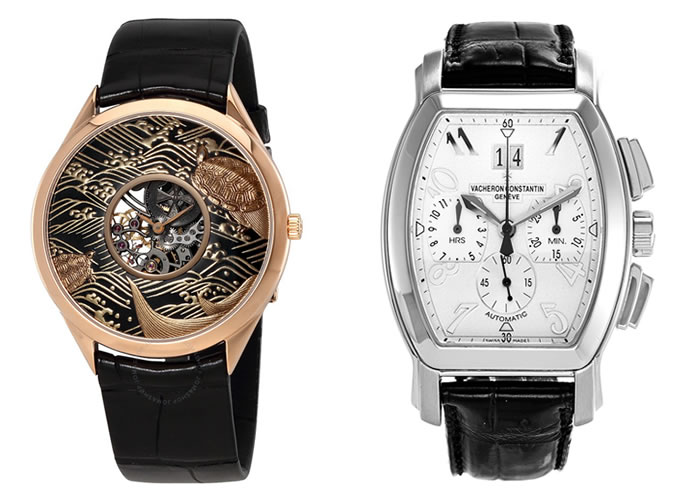
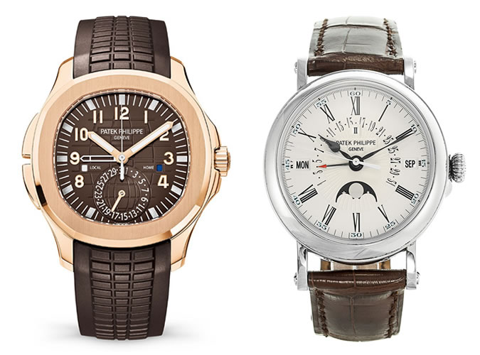

It was a classic case of having too much work and not enough time to do it that led to Jules-Louis Audemars teaming up with Edward Piguet. Audemars hired Piguet to cope with increased demand for his highly complicated watches, a passion Piguet shared.
The two became friends and, in 1875, established their own brand in Le Brassus, where Audemars Piguet remains today producing about 40,000 watches a year. Complicated watches are still a speciality, thanks in part to having renowned movement makers Renaud et Papi as an AP subsidiary, but the brand is best known for kickstarting the luxury steel watch trend with the launch, in 1972, of the Gerald Genta-designed Royal Oak.
There have been other iterations, such as the Royal Oak Offshore, and models featuring perpetual calendars and chronograph functions but the straight-up two-hand Royal Oak remains Audemars Piguet’s iconic calling card.
The best-known luxury watch brand in the world was started in 1905 by Hans Wilsdorf while he was residing in London. Apparently, the name comes from a suggestion from a Hispanic employee that they call the new brand Relex which was an abbreviation of “relojes excellentes”. Relex didn’t cut it so Wilsdorf changed the “e” to an “o” and history was made.
As well as producing around 2,000 watches a day, Rolex is a brand of firsts. The 1926 Oyster was the first waterproof wristwatch, the 1945 DateJust ref.4467 had the first automatically changing date and its GMT Master from 1954 was the first dual time-zone watch.
It has earned a reputation for making highly desirable, exceptionally well-made watches. No wonder a gold Rolex can allegedly be used as currency anywhere in the world
Despite appearances, the current incarnation of Lange & Sohne has only been making watches since 1994 when it launched the Lange 1. There was a pre-war company in Glashutte but that was nationalised by the post-war Soviet administration. When Germany was reunified in 1990 Walter Lange was offered his old premises back. He refused and set up Lange 2.0 down the road
Lange is renowned for the complexity and finish of its movements. Every model is mechanical, with movements made from a metal called German silver and a hand-engraved balance cock. It is also known for the outsize numerals of its date indicator, a style it translated into jumping hours for its 2014 Zeitwerk, and for positioning the displays on the dial according to the principles of the golden ratio (approximately equal to a 1:1.61 ratio).
Nothing – not the French revolution, not the Napoleonic Wars or two world wars – has stopped Vacheron Constantin from producing watches every year since 1755. Although it makes classic dress styles, jewellery pieces and more sporty designs, Vacheron’s reputation is built on a history of exceptionally complicated watches.
It currently holds the record for most complicated watch ever made – the Ref. 57260 – which houses 57 complications. Needless to say, it’s 98mm wide and not made for your wrist.
If Rolex is the brand everyone wants, Patek is the brand they aspire to. In 175 years, it has weathered world wars, recessions and near collapse (which was how the current owners, the Sterns came to buy the business) to become leader in the luxury watch world.
Set up by Antoni Patek and Jean Adrien Philippe in 1851, it has made watches for royalty, mastered all the extreme complications watchmaking has to offer and recently become one of the leading brands in terms of silicon technology. It even dabbled with compliant mechanisms with the launch of 2017’s Aquanaut Ref 5650 proving that Patek Philippe is still an innovator not a follower
